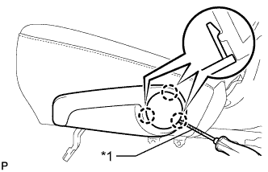
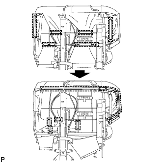

ЗАМОК РЕМНЯ БЕЗОПАСНОСТИ ЗАДНЕГО СИДЕНЬЯ № 1 В СБОРЕ (для моделей с раздельным сиденьем типа 60/40 с функцией облегчения посадки "Walk In" с левой стороны) > СНЯТИЕ |
| 1. СНИМИТЕ ЛЕВОЕ ЗАДНЕЕ СИДЕНЬЕ В СБОРЕ |
Снимите левое заднее сиденье в сборе (Нажмите здесь).
| 2. СНИМИТЕ ВЕРХНЮЮ ОТКИДНУЮ КРЫШКУ ЛЕВОГО ЗАДНЕГО СИДЕНЬЯ |
|  |
С помощью отвертки освободите 3 захвата и снимите наладку.
| *1 | Защитная клейкая лента |
| 3. СНИМИТЕ РУЧКУ ОТПУСКАНИЯ РЕГУЛЯТОРА НАКЛОНА ЛЕВОГО СИДЕНЬЯ |
 |
Выверните 3 болта и снимите рукоятку.
| 4. СНИМИТЕ ЛЕВУЮ КРЫШКУ ПЕТЛИ ЦЕНТРАЛЬНОГО СИДЕНЬЯ |
 |
С помощью съемника фиксаторов освободите фиксатор.
Освободите 2 направляющих и снимите крышку.
| 5. СНИМИТЕ МОЛДИНГ ПОДУШКИ ЛЕВОГО ЗАДНЕГО СИДЕНЬЯ |
 |
С помощью съемника фиксаторов расцепите фиксатор.
С помощью съемника молдингов расцепите 3 захвата.
Переместите молдинг в направлении, указанном на рисунке стрелкой, чтобы отсоединить направляющую, и снимите молдинг.
| 6. СНИМИТЕ КРЫШКУ ЗАЩЕЛКИ ЗАМКА СПИНКИ ЛЕВОГО ЗАДНЕГО СИДЕНЬЯ |
 |
С помощью съемника фиксаторов освободите 3 фиксаторов и снимите щиток.
| 7. СНИМИТЕ ОБИВКУ ПОДУШКИ СИДЕНЬЯ ВМЕСТЕ С ПОДУШКОЙ |
|  |
Отсоедините крепления.
 |
Освободите крепление и снимите обивку подушки сиденья вместе с подушкой.
| 8. СНИМИТЕ ЗАМОК РЕМНЯ БЕЗОПАСНОСТИ ЛЕВОГО ЗАДНЕГО СИДЕНЬЯ № 1 В СБОРЕ |
 |
Выверните болт, снимите замок ремня безопасности и отсоедините крепление 3-точечного ремня безопасности.